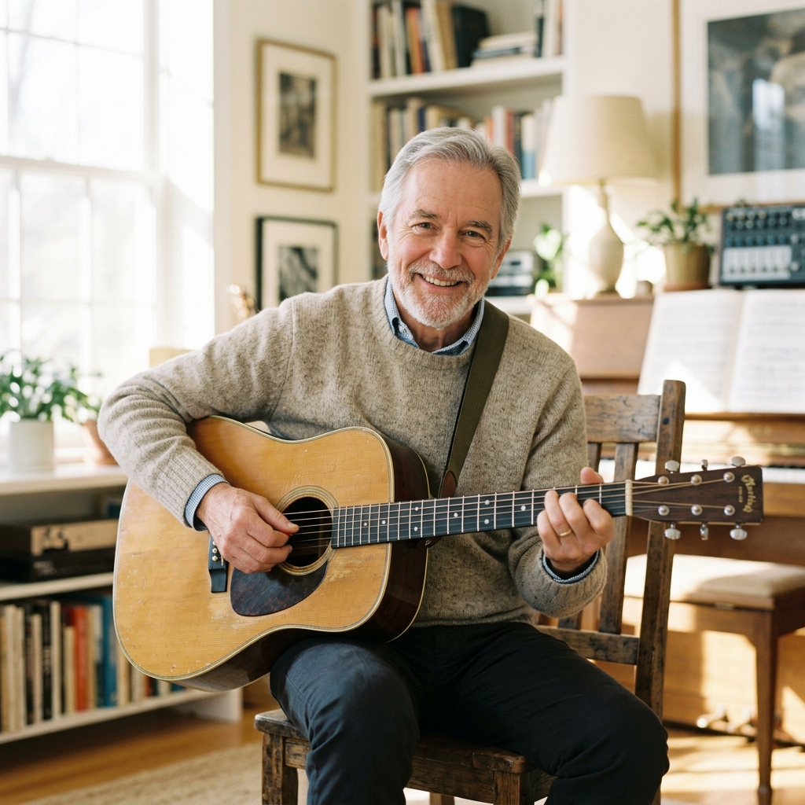
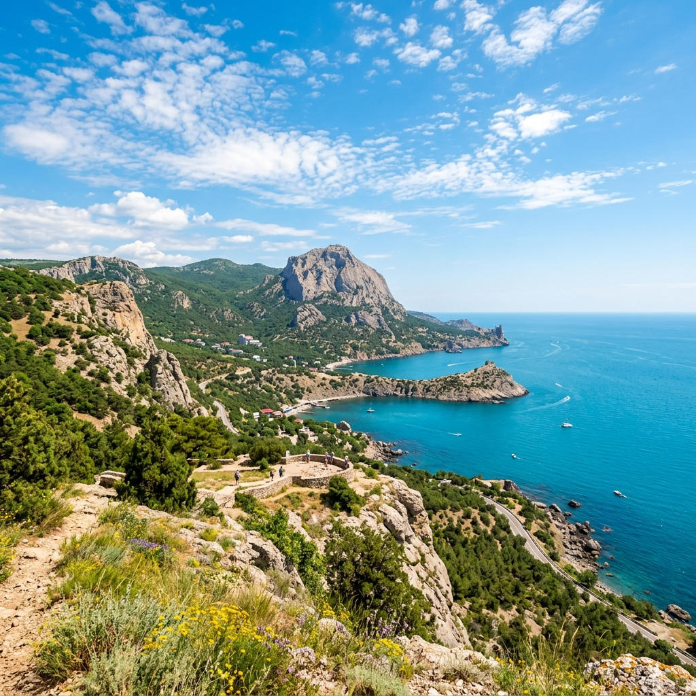
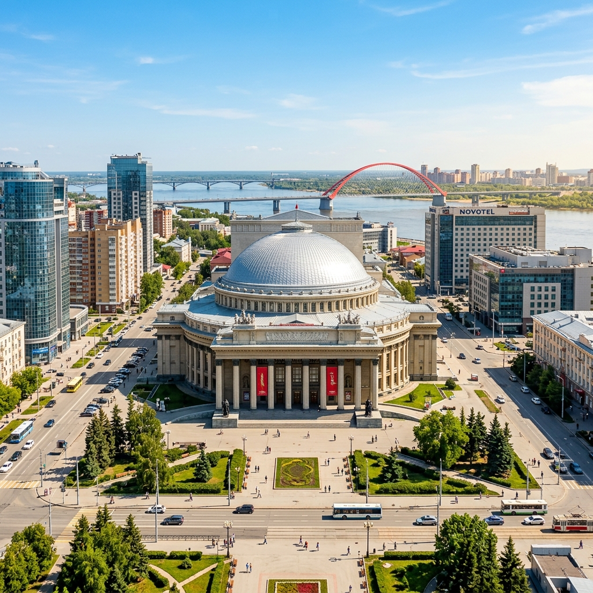
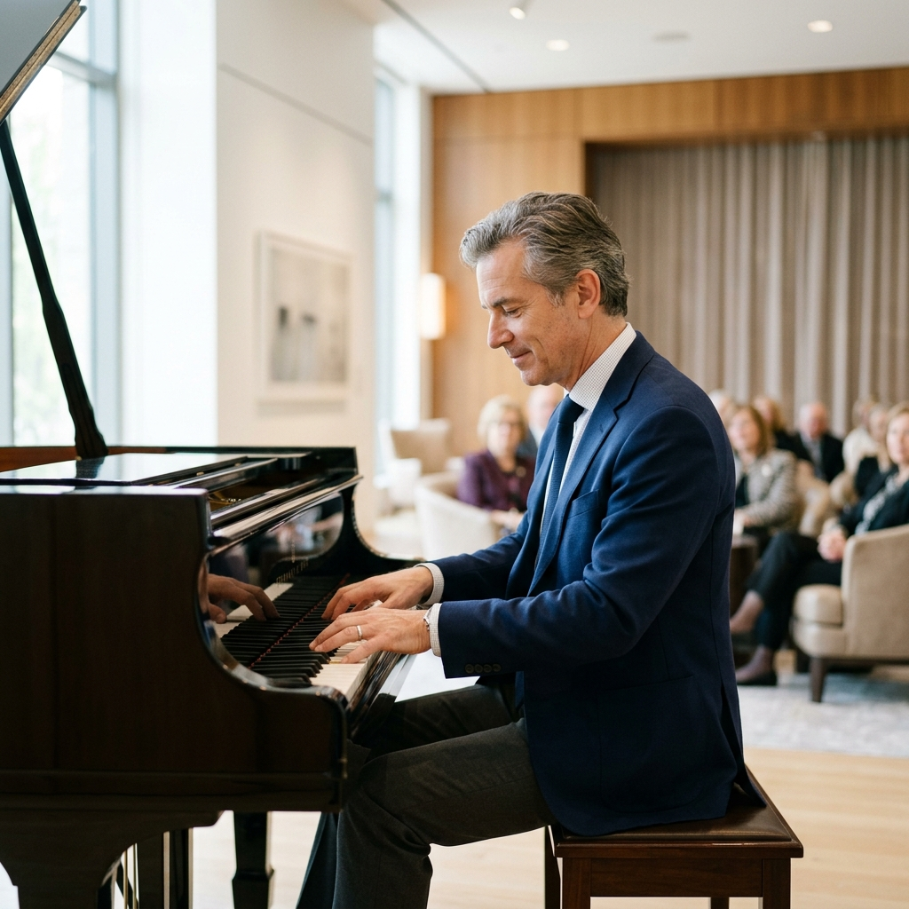
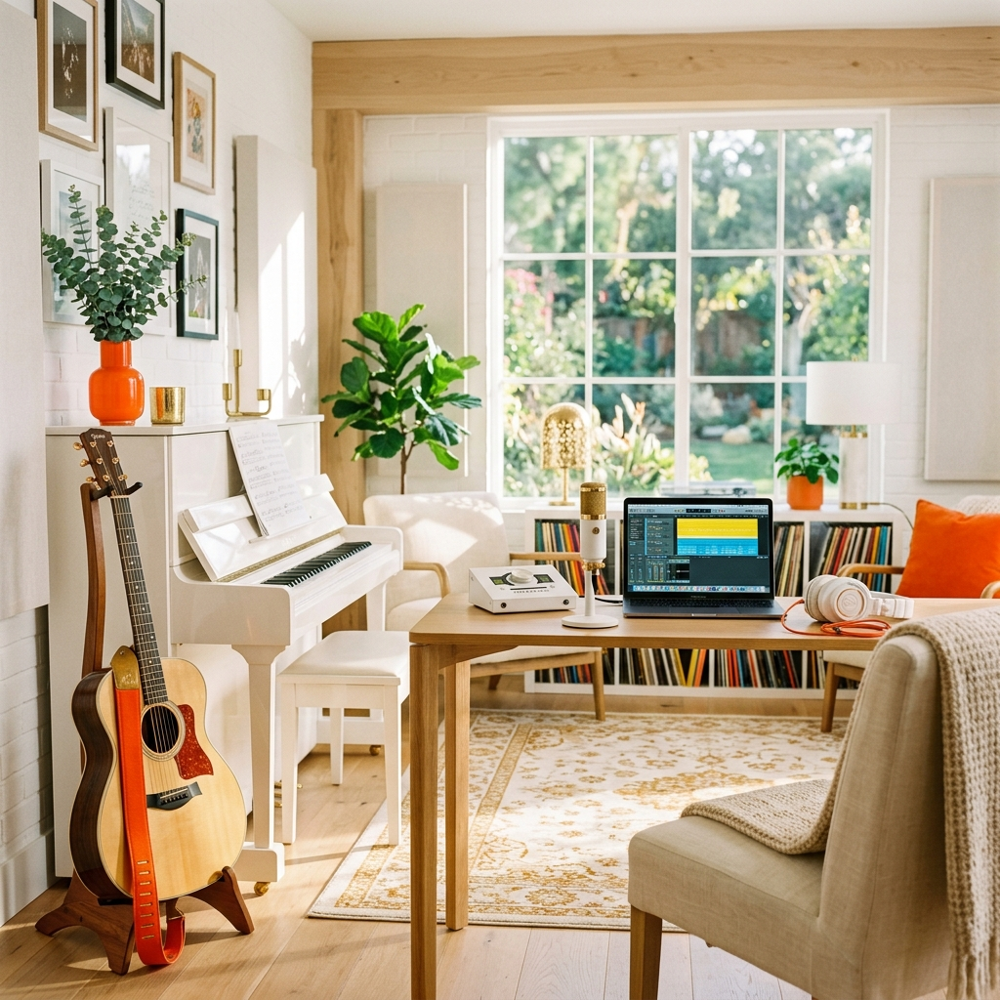

Творческий путь
«Николай Львович активно участвовал в музыкальных фестивалях и конкурсах, включая фестивали шансона и межрегиональные песенные конкурсы. Его композиции вошли в репертуар известных исполнителей.»
Узнать больше
Жизненный путь
Ташкент — Кочкор-Ата
28 февраля 1954 года в городе Ташкенте в семье Льва Николаевича и Нины Семёновны Васильевых родился будущий музыкант Николай Львович Васильев. Первые годы жизни он провёл в Ташкенте, а в 1958 году семья переехала в Киргизию. Детство и юность музыканта прошли в посёлке Кочкор-Ата, где он окончил среднюю школу №15.
Начало творческого пути
Серьёзное увлечение музыкой началось во время службы в пограничных войсках 1972–1974 годов.
После демобилизации в 1975 году Николай Львович приехал в Новосибирск, где поступил в музыкальное училище на народное отделение.
Параллельно с учёбой активно участвовал в выступлениях вокально-инструментальных ансамблей и эстрадных коллективов города.
В 1983 году музыкант вернулся в Среднюю Азию, где продолжил концертную деятельность, выступая как в ВИА, так и в национальных музыкальных коллективах. Этот период обогатил творческий опыт и расширил музыкальный кругозор.
Бахчисарай и море
1988 год стал новым этапом в жизни музыканта — вместе с семьёй, в которой уже подросли трое сыновей, он переехал в Крым. Здесь Николай Львович активно занялся творчеством, создав совместно с друзьями Сергеем Ананьевым и В.Д. Белобородовым музыкальный альбом, посвящённый Бахчисараю.

Возвращение в Новосибирск
1994 год ознаменовался возвращением музыканта в Новосибирск. К счастью, его здесь помнили и ценили, что позволило ему с новыми силами погрузиться в творческую деятельность. Особое место в его творчестве заняли песни о любимом городе и Сибири.

Слушать
Фотографии
перетащите


Достижения
Активное участие в различных музыкальных фестивалях и конкурсах, включая фестивали шансона и межрегиональные песенные конкурсы.
Творчество музыканта получило поддержку фонда по увековечиванию памяти В.С. Высоцкого. Выражение благодарности председателю фонда за оказанную поддержку.
Его композиции вошли в репертуар известных исполнителей, в том числе вокально-инструментальных ансамблей и национальных музыкальных коллективов.
«Творчество Николая Львовича Васильева неразрывно связано с его родным городом и друзьями. Множество песен он посвятил Новосибирску и его окрестностям, отразив в них свою любовь к малой родине и признательность близким людям. Его музыкальная карьера — это яркий пример того, как талант и упорный труд могут привести к признанию и успеху в любимом деле.»— из биографии музыканта